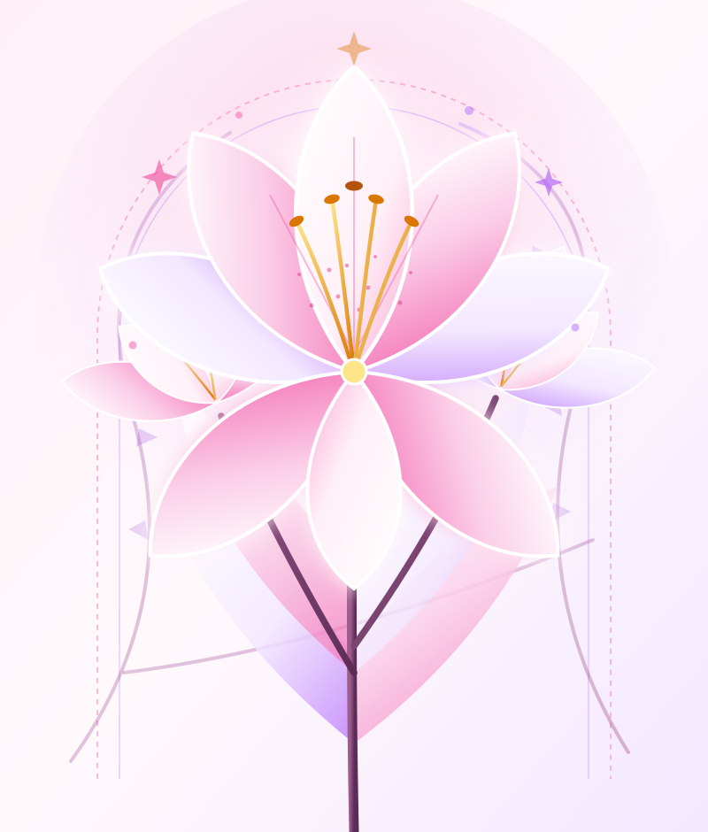

A Strong & Lasting Foundation in God
A Lily Among the Thorns is a Christ-centered organization committed to empowering young women to build a strong and lasting foundation in God as they navigate the different seasons of womanhood and adulthood.
Growing with grace in a world that isn't always gentle.
“Rooted and built up in him, and established in the faith, as ye have been taught, abounding therein with thanksgiving.”— Colossians 2:7 (KJV)

Nurturing young women spiritually, emotionally, mentally and practically.
“Our worth is not determined by the world, but by the One who created us.”
A Lily Among the Thorns is a Christ-centered organization committed to empowering young women to build a strong and lasting foundation in God as they navigate the different seasons of womanhood and adulthood.
We believe that true growth begins with knowing God, understanding our identity in Christ and recognizing that our worth is not determined by the world, but by the One who created us.
Through faith, fellowship, mentorship, personal development, wellness and community outreach, we seek to nurture young women spiritually, emotionally, mentally and practically. We aim to create a sisterhood where women are encouraged to grow in their relationship with God, discover their God-given purpose, develop their gifts and walk confidently in the lives they are called to live.
We recognize that life may bring challenges, uncertainty and difficult seasons. However, we believe that when a woman is rooted in Christ, she can continue to grow with faith, hope, courage and grace.
Empowering a generation of young women to flourish in every season of life.
To create a Christ-centered world where every young woman is rooted in God, secure in her identity in Christ, and empowered to navigate life with faith, self-love, dignity, purpose and grace.
We envision a generation of young women who grow spiritually, embrace their individuality, recognize their worth, cultivate meaningful relationships, overcome life's challenges and flourish in every season of their lives.
We aspire to build a sisterhood where young women feel seen, heard, valued and supported, and where no woman has to navigate the journey of becoming alone.
To provide a safe, inclusive, nurturing and Christ-centered space for young women aged 18 and above to strengthen their relationship with God and navigate the different experiences and transitions of adulthood and womanhood.
Through faith-based teachings, mentorship, personal development, wellness initiatives, sisterhood, education, community engagement and empowerment programs we seek to equip young women with the spiritual foundation, knowledge, skills, resources and support necessary to develop healthy relationships with God, themselves and others.
We are committed to fostering a culture of faith, self-love, compassion, growth, resilience and sisterhood, encouraging every young woman to discover her God-given purpose and flourish in a world that isn't always gentle.
The spiritual and practical principles that shape our walk together.
Building our lives on a solid foundation in God.
Colossians 2:7Building our lives on a solid foundation in God.
Giving ourselves and others room to grow.
Recognizing the worth God has placed within us.
Supporting, uplifting and growing together.
Leading with kindness and understanding.
Embracing spiritual, personal and practical development.
Honoring the value of every woman.
Encouraging women to discover and walk in their God given calling.
How we empower, uplift, educate, and walk alongside young women across our communities.
To empower young women to develop self-awareness, self-acceptance, confidence, emotional intelligence and a positive sense of identity through educational and developmental initiatives.
To establish safe and inclusive platforms where young women can connect, share experiences, build meaningful relationships, access mentorship and support one another without discrimination or judgement.
To encourage physical wellness, body confidence, health education, preventative healthcare, personal hygiene, nutrition and holistic self-care.
To raise awareness, provide education and facilitate support initiatives addressing gender-based violence, discrimination, exploitation, social inequality, period poverty and other challenges affecting young women.
To establish mentorship programs that connect young women with experienced women, professionals, leaders and role models for guidance, support and knowledge-sharing.
To equip young women with the confidence, knowledge and skills to participate meaningfully in society, advocate for their rights, take on leadership roles and contribute positively to their communities.
To implement charitable, educational and developmental projects that support vulnerable women and girls, promote social upliftment and improve the well-being of communities.
“You are a lily among the thorns — deeply loved by God, rooted in Christ, and created to bloom with grace even in seasons that aren’t gentle.”
Rooted in Christ • Colossians 2:7Called to nurture, uplift, and walk alongside young women in faith, grace, and sisterhood.
Passionate about seeing young women rooted in Christ, walking boldly in their God-given identity, and flourishing with dignity, self-love, and grace.
Dedicated to cultivating a safe, nurturing Christ-centered sisterhood where every young woman feels seen, heard, valued, and equipped for purpose.
No woman has to navigate the journey of becoming alone. Whether you are looking to join our fellowship, seek mentorship, partner with our outreach initiatives, or simply say hello — we would love to hear from you!
Fill in your details below to send a message directly via WhatsApp to our founders.